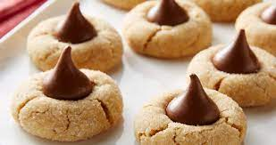

Hershey Kiss Cookies

Description
Hershey Kiss Cookies made with homemade chocolate chip cookie dough (or a 468g package of ready-made chocolate chip cookie dough).
This makes 24 cookies for one batch and takes approximately 20-25 minutes to prepare.
Cookie Dough Ingredients
- 1/2 cup butter (softened)
- 1/2 cup sugar
- 3/4 cup packed brown sugar
- 1/4 cup oil
- 2 eggs
- 1 tsp vanilla extract
- 2 cups flour
- 1 tsp baking soda
- 1/4 tsp salt
- 1 cup mini chocolate chips
Alternatively, you could also use a package of ready-made chocolate chip cookie dough.
Steps
- Soften the butter.
- In a large mixing bowl, cream the butter and sugars.
- Add eggs, oil, and vanilla extract. Beat until smooth.